Training load: recompute on threshold change
Review of plans/training-load-recompute.md. Stored load (TSS / TRIMP /
duration) now follows gender, rest HR, max HR and FTP. Every session is reparsed once so it
stores the app's own NP. All changes are in the working tree; nothing is committed.
User-visible changes
C1Overlay copy: "Migrating your sessions…"
ui_reprocess_updating was "Updating your sessions…" / "Einheiten werden
aktualisiert…". It now reads "Migrating your sessions…" / "Einheiten werden migriert…".
The same text is used for derivation reprocessing and for the recompute.
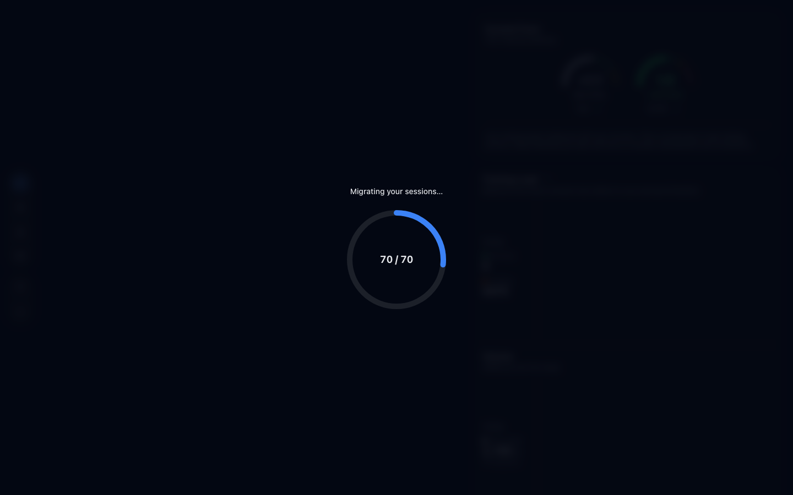
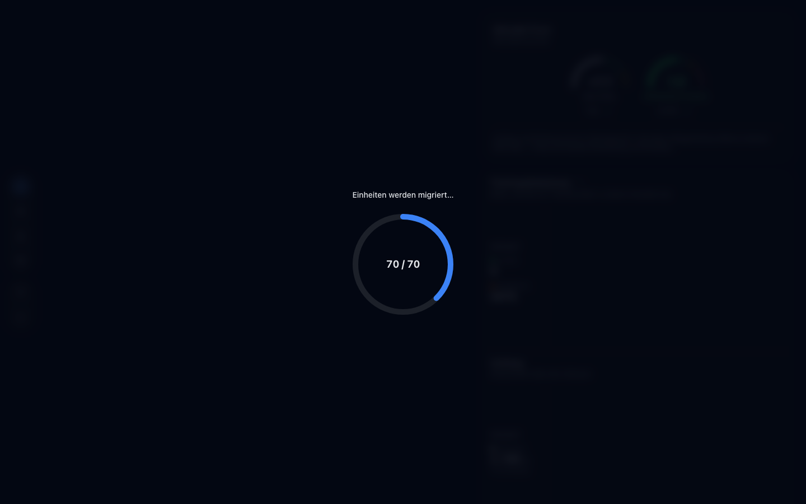
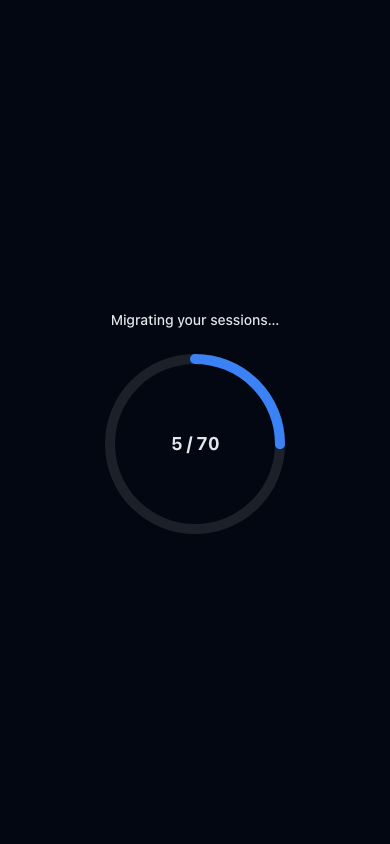
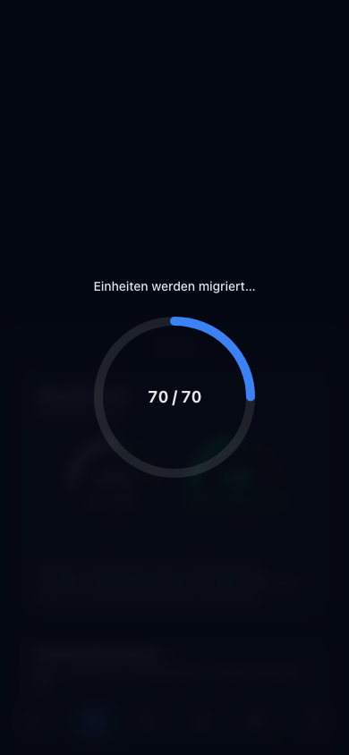
C2One-time reparse on the first start
SESSION_DERIVATION_VERSION goes from 3 to 4. On the first start every session
is reparsed once from its FIT file (or from its records when it has no FIT) and gets the
app's own NP plus the current profile's load. The C1 screenshots were taken during this
run: 70 seeded sessions at version 3, captured right after the reload.
C3Overlay after a threshold change
When you save a profile change (here: a first FTP of 250 W in Settings), the recompute opens the same overlay, but only when at least one session's load changes. There is no summary or toast afterwards. The ring counts the changed sessions (71 = 70 seeded rides + 1 uploaded run).
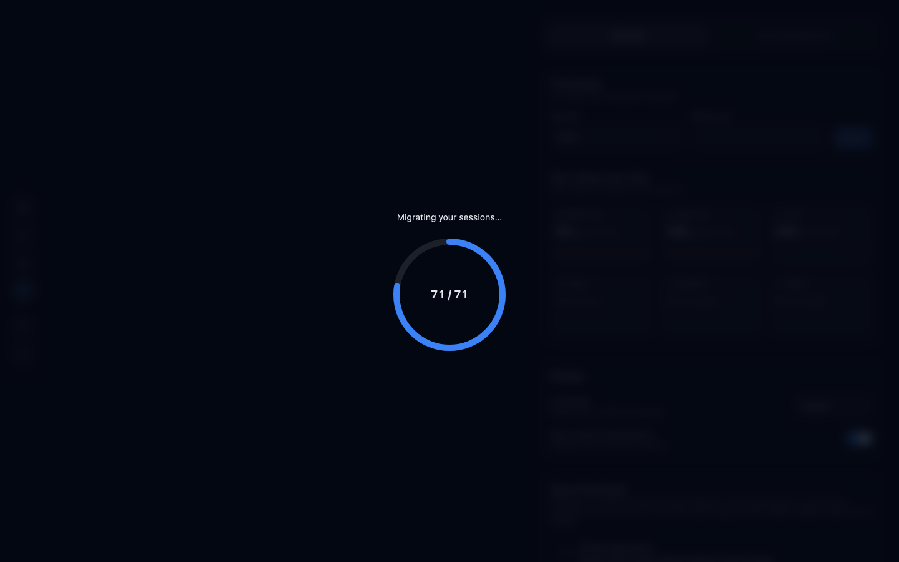
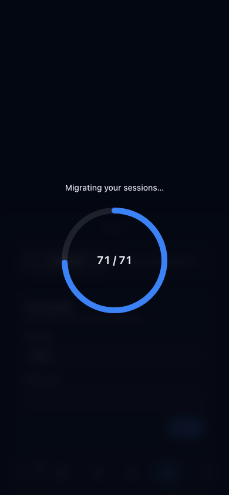
C4Minimum display time of 1.5 s
MIN_OPEN_MS goes from 800 to 1500. The import summary waits that long, as
before. The reprocess overlay now also stays up until openedAt + 1500 ms:
when foreground is cleared early, the overlay keeps rendering the last
reprocess state. The app may already mount underneath. The C1 and C3 screenshots exist
because of this: both runs finish in well under 1.5 s.
C5Load tile switches TRIMP → TSS after you add an FTP
A run with power (e2e/fixtures/running.fit) imported without an FTP shows 78
TRIMP. After you add FTP 250 W, the same tile shows 206 TSS, computed from the stored app
NP and without reading records. A first FTP entry applies to every session.
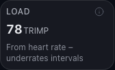
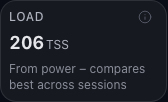
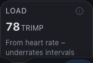
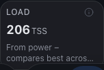
C6Fitness chart follows the new load
Dashboard "Performance Metrics" with 70 seeded rides (avg HR + NP). Before: TRIMP, CTL 61 / ATL 60. After adding FTP: TSS, CTL 81 / ATL 77. The dashboard reads the store reactively, so the store update is enough. Expect the same one-time jump on the first start after release (plan, Risks).
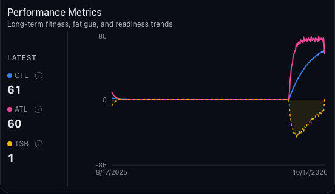
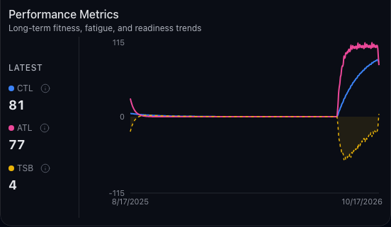
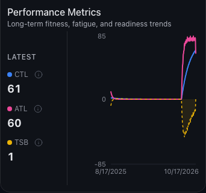
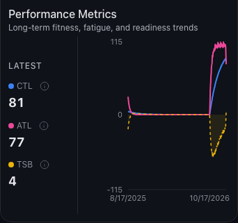
Changes without UI
N1Engine: calculateSummaryStress
New pure function that computes load from stored fields (duration, avg HR, NP) and
thresholds. The order is TSS (NP and FTP > 0), then TRIMP (avg HR), then duration. NP 0
W with an FTP gives TSS 0. calculateTSS takes NP instead of records.
calculateSessionStress now always derives NP from records, delegates to the
new function, and returns NP whenever it exists.
N2Import always stores the app's NP
The hasPowerRecords gate and the device
normalized_power fallback are gone. Import computes NP from records and calls
calculateSummaryStress, the same function the recompute uses, so a fresh
import never "changes" on the next run. To observe: import a power file with no FTP;
normalizedPower is set and the load is TRIMP.
N3Keep rule removed from reprocessing
The reparse now keeps its own tss / stressMethod /
normalizedPower. Before, it kept the stored values unless both sides were
TSS. The records-only path uses sessionStressAt with records NP, or the
stored NP when the records have none. With no profile, the stored values stay.
SESSION_REPROCESSING_LOCK is now exported.
N4Store action applyRecomputedTrainingLoad
Assigns only tss, stressMethod and
normalizedPower on the immer draft, by id, so a concurrent
markSessionSeen survives. The persisted shape is unchanged, so there is no
version bump.
N5Recompute and trigger
recomputeTrainingLoad() takes the reprocessing web lock, rehydrates sessions,
diffs every session against sessionStressAt, and opens the overlay only for a
non-empty diff. It commits every REPROCESS_BATCH_SIZE, flushes, and returns
the number changed. It reads no records. The effect runs it on the first
phase === 'done' after start and whenever
trainingLoadSignature(profile) changes (gender and the rest HR / max HR / FTP
histories).
N6E2E seeds store a consistent load (deviation)
The seed helpers wrote tss: 80, stressMethod: 'trimp' without an avg HR. The
startup heal rewrote that to the duration load and opened the overlay in the middle of the
mobile bottom-sheet tests. Seeds now store the load the app itself computes. The
labs/coach seed gets FTP 250 plus an NP with (NP/FTP)² × 100 = the requested TSS, so the
coach tests keep their TSS 50 / 200 baselines.
Verification
| Command | Result |
|---|---|
vp build |
pass |
vp check |
fmt flags only the untracked plans/*.md, which I may not edit.
vp check --no-fmt passes (lint and types, 544 files), and
vp fmt --check src tests messages e2e is clean.
|
vp test -- --run |
1299 / 1299 pass |
vp exec playwright test |
81 pass, 1 fail: e2e/mobile/map.spec.ts:480 (lap zoom by tap). It fails the
same way on a clean HEAD checkout under parallel load and passes with
--workers 1, so it is not caused by this change.
|
vp build (final) |
pass |
Open points for your review
-
Settings page remounts after saving a threshold. While the reprocess
overlay is open the app underneath unmounts (
appMounted,src/components/layout/AppLayout.tsx), the same behaviour reprocessing has today. After a small Settings edit (e.g. adding FTP), the Settings page therefore remounts and the scroll position and open dialogs are lost. Options: (a) keep it (consistent with reprocessing); (b) during a recompute keep the app mounted and only cover it with the overlay. Recommendation: (b), a small change toappMounted. Not implemented; waiting for your decision. -
Flaky e2e
e2e/mobile/map.spec.ts:480also fails on a clean HEAD under parallel load and passes with--workers 1. Suggest a separate follow-up branch. -
Unplanned file:
e2e/helpers/seed.tschanged so the seeded load matches the profile (see N6). Otherwise the startup recompute opens the overlay mid-test.
How to check it yourself
- First start on this branch with existing data: "Migrating your sessions…" appears once, for at least 1.5 s. Reload: it does not appear again.
- Remove the FTP (or start fresh without one) and import power rides: the load tile on the session shows TRIMP.
- Add an FTP in Settings: the overlay shows briefly, the tiles switch to TSS, and the dashboard fitness chart and load change.
- Change max HR: only sessions from today on change. Older sessions keep their load, because dated thresholds apply from today.
- Change gender: every TRIMP session changes, because gender is undated.
- Reload after any of these: nothing changes again and no overlay appears (idempotent).
- With intervals.icu connected, an intervals.icu ride behaves the same as a file import.